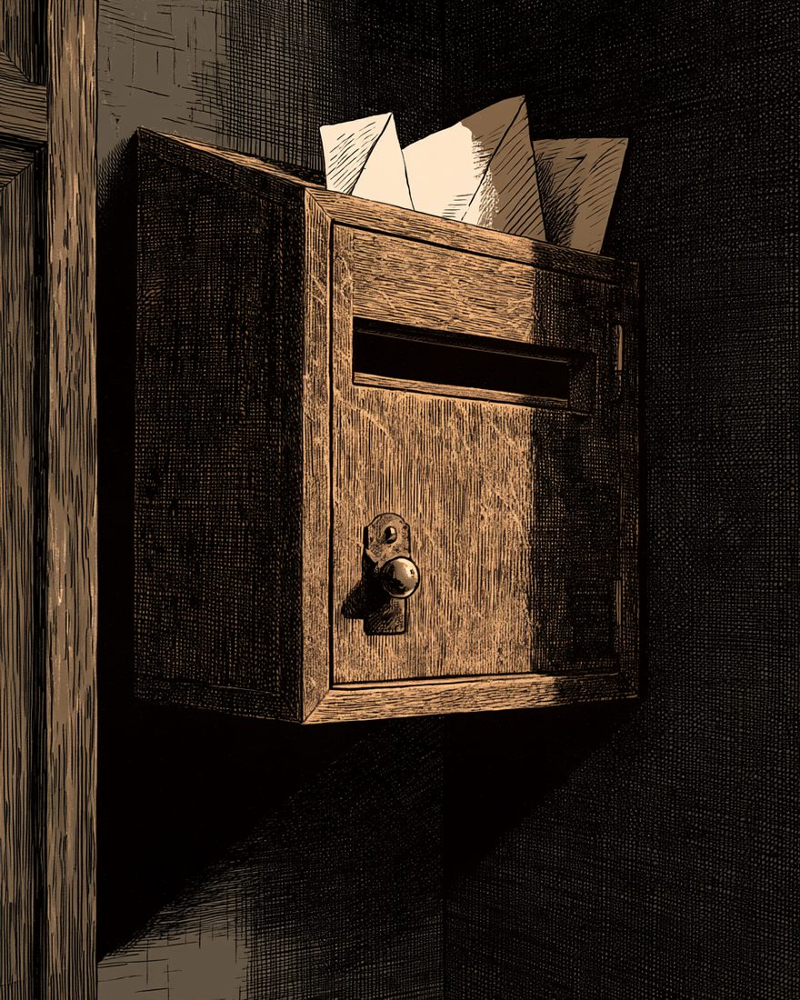
봉투 제일호
참살된 소녀의 무덤에 두 청년의 유령
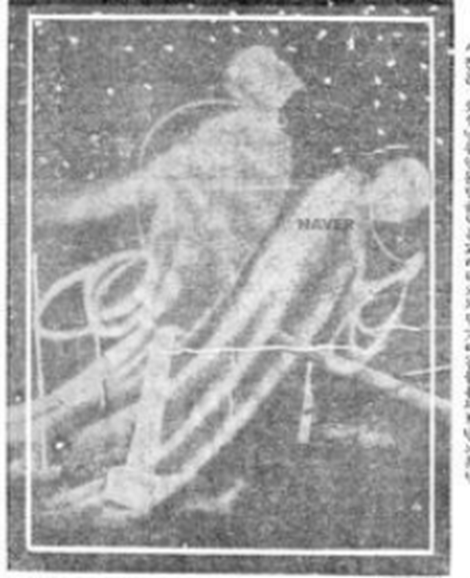
소녀를 죽엿다는 혐의를 바다서
참혹한 사형에 애매히 죽은 령혼.
「보통 사람은 말할 것도 업고 학자들까……」
그 무덤 우에 서 잇는 것은 누구인가.
현상 중 — 사진이 떠오를 때까지 기다리시오
본보 1926년 8월 13일 5면 게재 사진 · 현상실 그림은 재현
이 사진은 — 도장을 하나 찍으시오
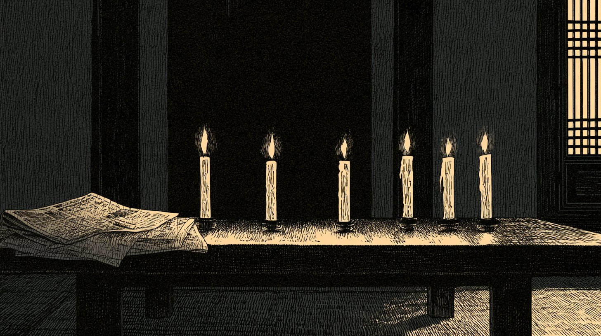
경성야록 · 납량란
초를 켜 두고 괴담 한 편에 초 하나씩 끄던 밤 노리
소리를 켜고 보시기를 권하오 · 소리는 맨 우 유성기로 언제든 끌 수 잇소
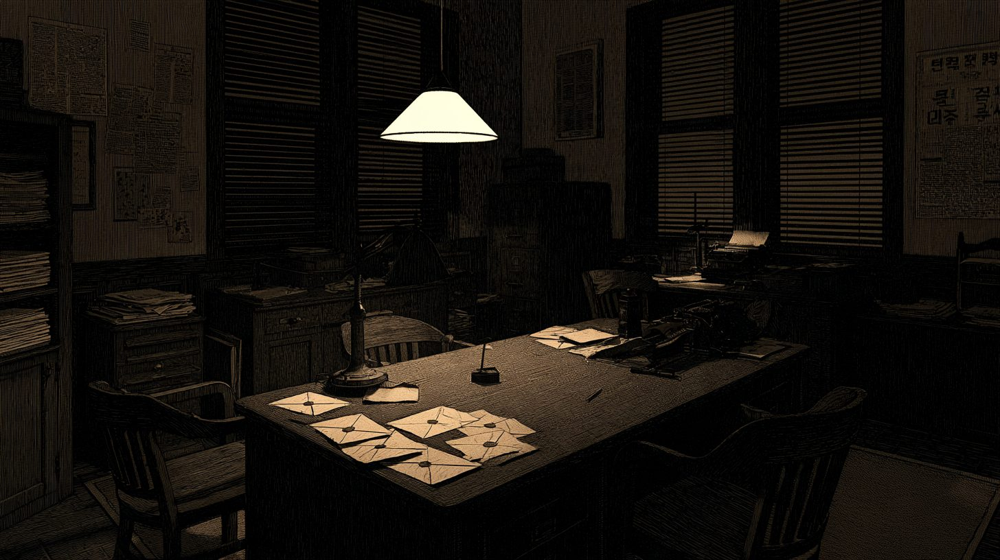
소화 구 년 녀름, 자정. 편집국
그해 녀름 본보는 「여름의 괴담」 원고를 모핫다.
그 원고는 아즉 차저내지 못하얏다.
대신 책상 우에 봉투 여섯 장.
지면 곳곳에서 오려 낸, 긔이한 긔사들이다.
한 장을 다 닑거든, 초를 하나 끄시오.
하기원고모집 — 동아일보 1934년 7월 17일~8월 8일, 여섯 차례 게재 · 모집 항목 「여름의 괴담과 소화(일천 자 이내)」
봉투 제일호

소녀를 죽엿다는 혐의를 바다서
참혹한 사형에 애매히 죽은 령혼.
「보통 사람은 말할 것도 업고 학자들까……」
그 무덤 우에 서 잇는 것은 누구인가.
현상 중 — 사진이 떠오를 때까지 기다리시오
본보 1926년 8월 13일 5면 게재 사진 · 현상실 그림은 재현
이 사진은 — 도장을 하나 찍으시오
봉투 제이호
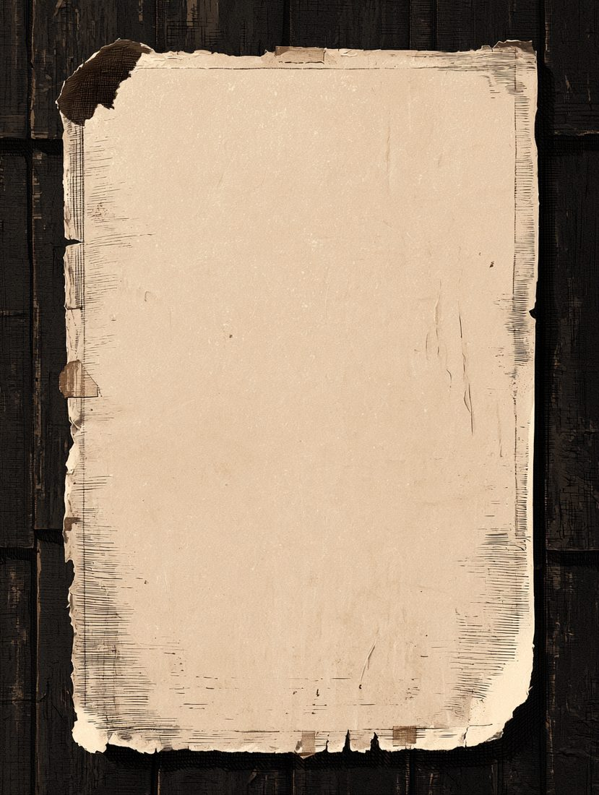
광 고
귀신
파오
집에 붓흔 귀신 떼여 드림
새 귀신도 잇슴 · 밤에만 문의
※ 편집국이 지어낸 벽보
벽보 뒤에 붓흔 것 — 진짜 지면
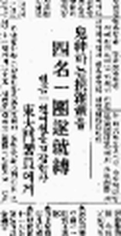
鬼神 파는 挾雜輩들
四名一團遂就縛
현금 一천여 원을 협잡한 자 東大門署員에게
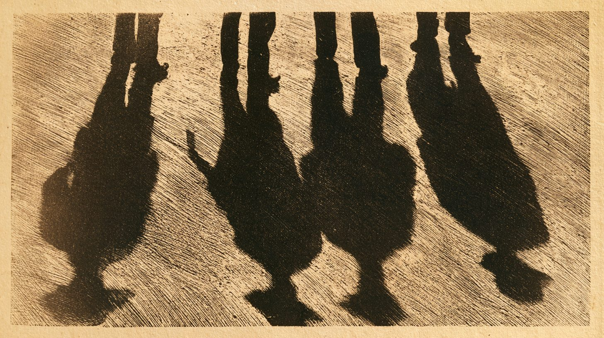
귀신을 판다는 이들. 한 패는 네 사람.
가로챈 돈은 현금 일천여 원.
결국 나타난 것은 귀신이 아니라 동대문서원이엇다.
봉투 제삼호
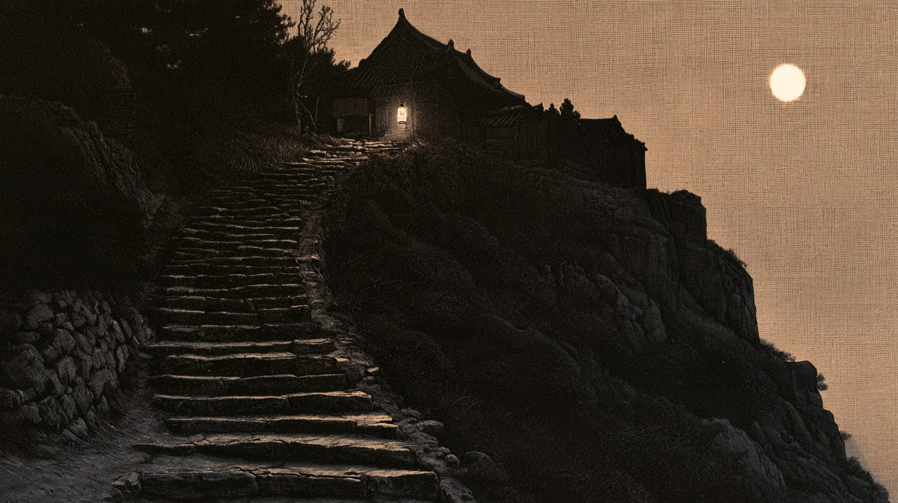
손으로 안개를 거드시오
소화 이 년 겨을, 본보는 「전설의 조선」을 련재하고 잇섯다.
예순여섯재 이약이의 제목은 「괴이한 증봉산」.
안개가 거치자 산 우에 불이 하나.
그러나 이 산의 무엇이 괴이한지는, 아즉 아모도 닑지 못하얏다.
봉투 제사호
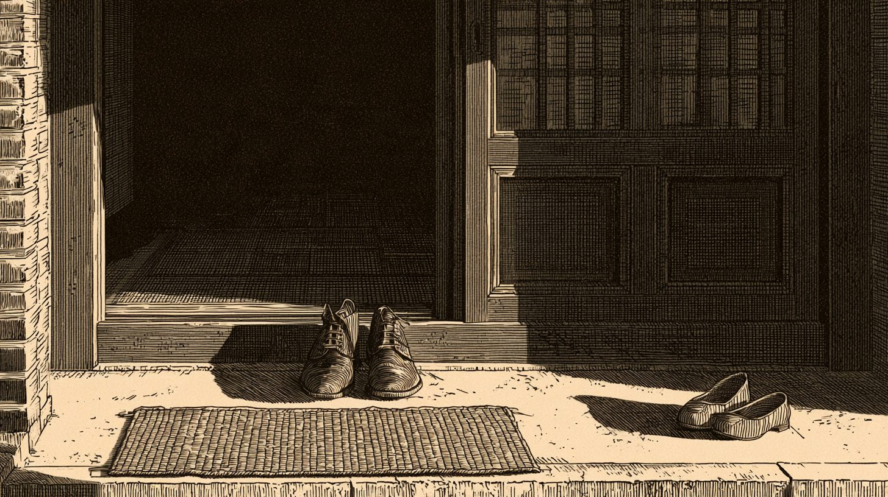
수상한 부부가 한 번 다녀갓다.그 뒤, 이 집에서 —
불 꺼진 방이오. 촛불을 들고 방 안을 비처 보시오.
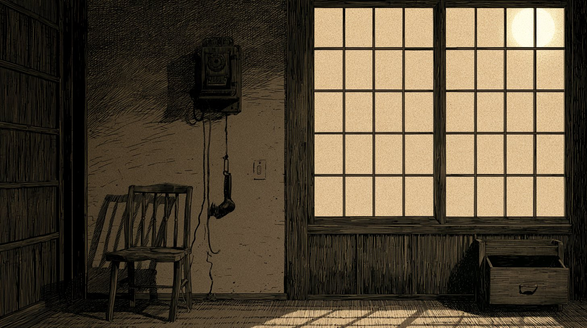
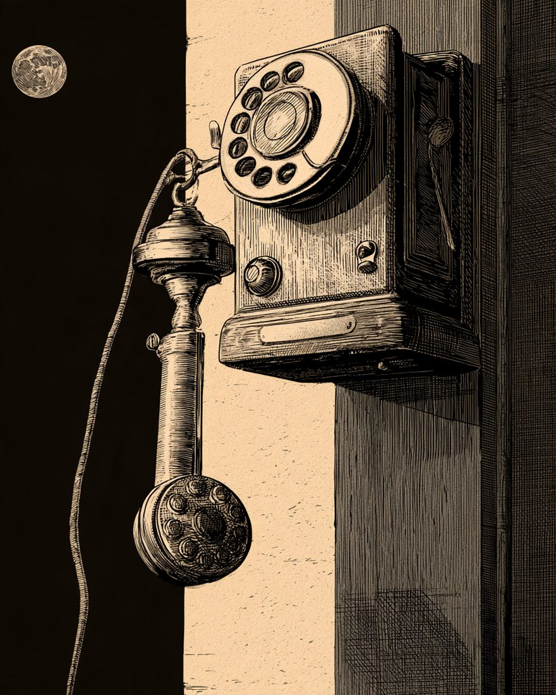
0 / 4
신문은 이 밤을 「환극」이라 불넛다.
그는 누구에게 뎐화를 걸녀 하엿나.
봉투 제오호
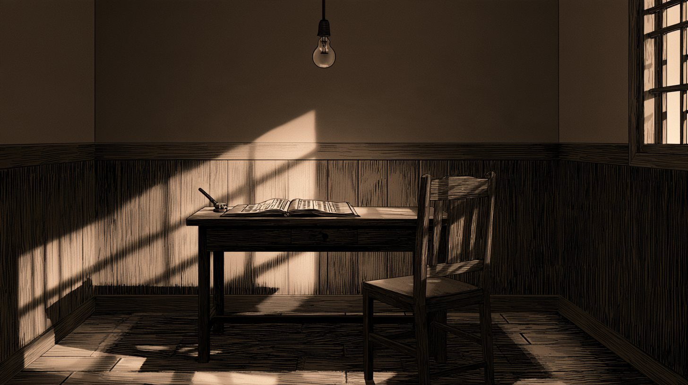
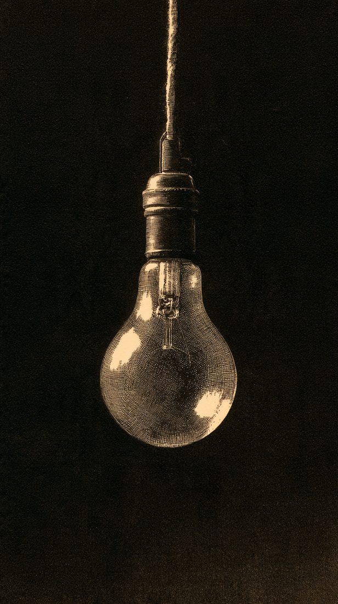
취조 긔록편집국이 꾸민 장면
긔괴!
살인강도 혐의를 밧던 사람이, 취조를 밧던 중 말을 못 하게 되엿다.
신문은 제목 맨 압헤 「긔괴!」라고 적엇다.
봉투 제륙호
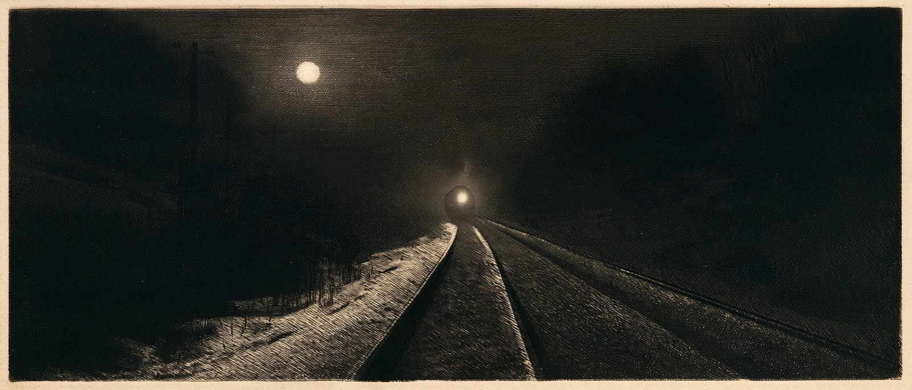
평원선 철길 우에, 누군가 가로누어 잇섯다.
신문은 그를 「괴시체」라 불넛다.
한 사람의 죽엄이다.
본 야록은 제목 넘어를 지어내지 안는다.
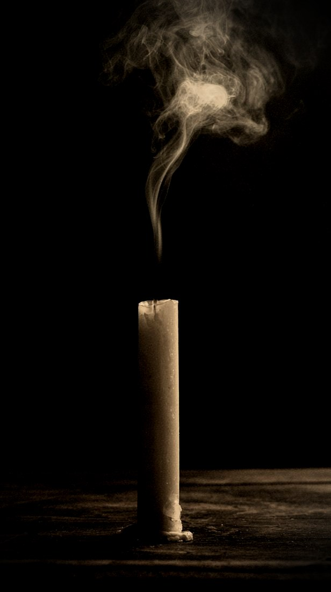
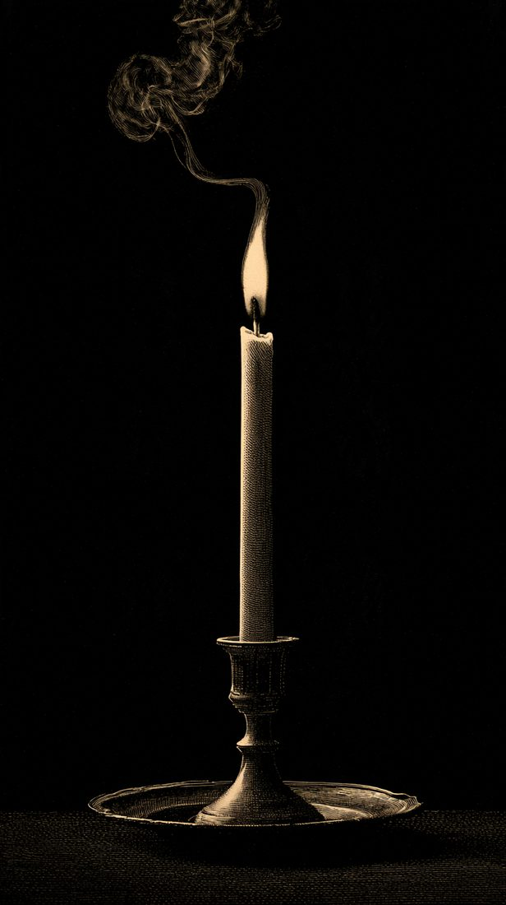
초가 다 꺼젓소.
그런데 — 아모도 켜지 안은 초가 하나 잇소.
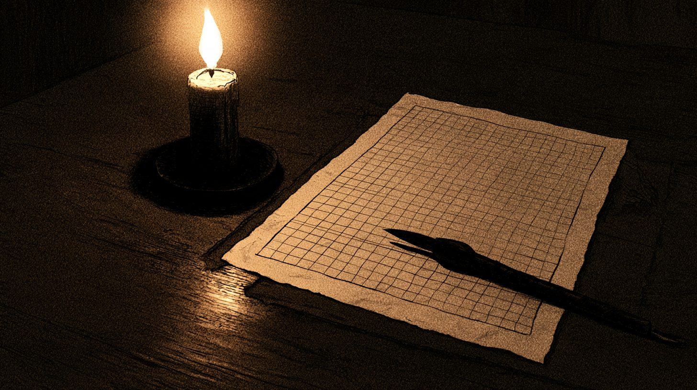
제칠화 — 당신의 괴담일천 자 이내
0 / 1000
